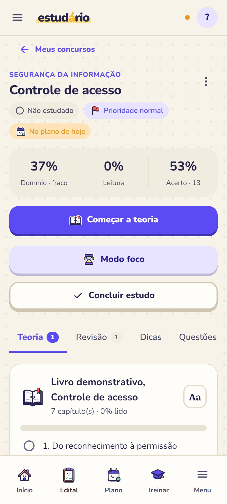
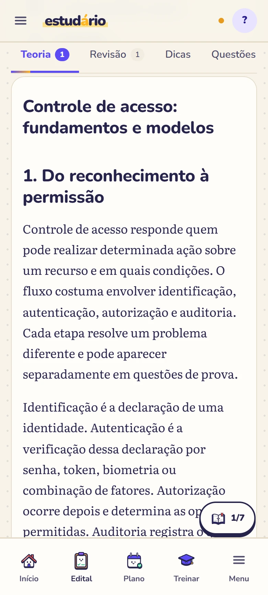
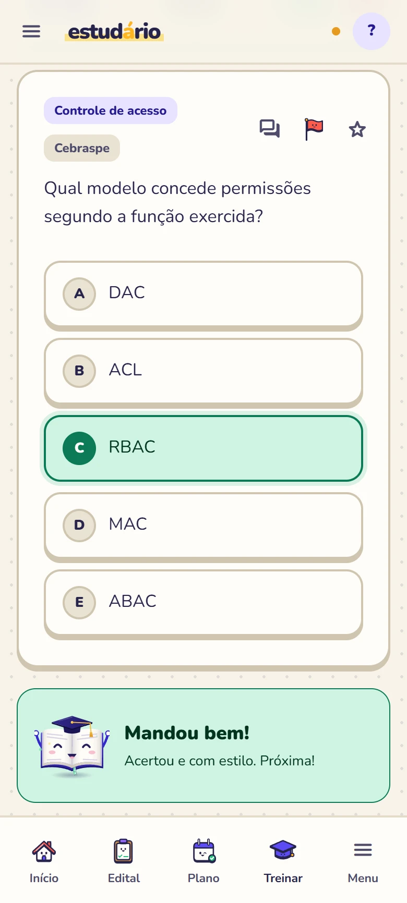
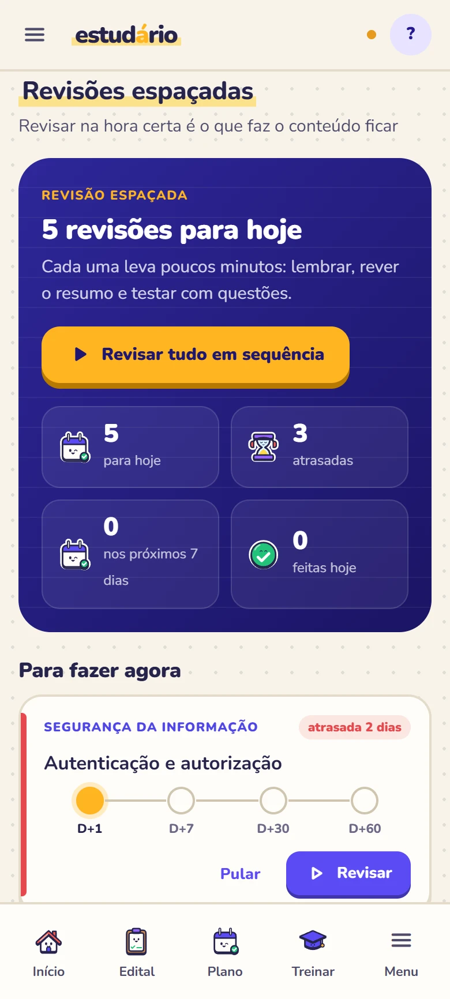
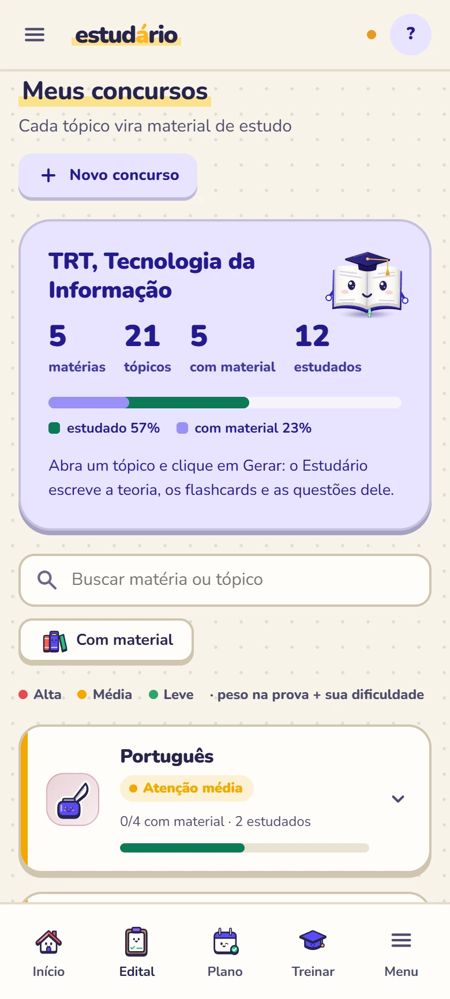

Como funciona
Quatro passos, e do terceiro em diante é a sua rotina.
Escolha o edital
Procure pelo órgão, cargo ou sigla no catálogo. Se o seu não estiver lá, mande o PDF e as matérias saem organizadas.
Conte sua rotina
Quanto tempo por dia, quais dias e a data da prova. O plano usa isso e o peso de cada matéria no edital.
Estude o tópico do dia
Teoria em capítulos, resumo, flashcards, dicas e pegadinhas. Grife o que importa e anote na margem.
Treine e revise
Questões comentadas logo depois da teoria, e o tópico volta nas revisões para não ser esquecido.
Recursos
Tudo o que a preparação pede, num lugar só.
Plano
Um plano que cabe na sua semana
Mostra o que estudar em cada dia, alterna as matérias pelo peso e coloca as questões logo depois da teoria do mesmo tópico.
- Se você atrasar, você decideFaça na hora, encaixe nos próximos dias ou empurre o plano. Nada do que você já fez se perde.
- Previsão honestaMostra em que dia o edital inteiro é visto no seu ritmo e avisa quando não cabe até a prova.
Material
O conteúdo de cada tópico, com as fontes no fim
Teoria em capítulos, resumo, flashcards, dicas e as pegadinhas mais comuns. Lei e conteúdo vêm de fontes oficiais, listadas para você conferir.
- Leitura com cara de livroFonte de livro, tamanho de letra do seu jeito e uma linha fina mostrando quanto falta.
- Grife e anoteOs grifos vão para o seu caderno de estudo e levam de volta ao ponto exato da teoria.


Questões
Questões no estilo da sua banca
Cada alternativa tem explicação, inclusive as erradas. A ordem das alternativas muda a cada vez, para você aprender o conteúdo e não a posição da resposta.
- Caderno de errosSepara o que você errou pelo conceito, para você ver o que realmente falta.
- SimuladosCom cronômetro e nota por matéria, no formato do seu concurso.

Revisões
O que você estudou volta na hora certa
Cada tópico estudado volta no dia seguinte, em 7 e em 30 dias. Na revisão você relembra os pontos principais, revê o resumo e faz algumas questões para fixar.
- Só no dia certoRevisar antes da hora enfraquece o efeito; o app espera o dia e avisa quando chega.
- O edital inteiro à vistaMatérias e tópicos na ordem do edital, com o que pesa mais na prova em destaque.


Onde usar
No celular e no computador, com a mesma conta.
Estude no ônibus pelo app e continue em casa, no computador ou no tablet, do ponto onde parou.
App para Android
Para estudar em qualquer lugar.
- Sem internet
- Leitura, plano, questões salvas e revisões funcionam offline.
- Lembretes
- Avisa a hora de estudar, as revisões e o que ficou atrasado.
- Modo foco
- Cronômetro que avisa quando o tempo planejado acabou.
- Sequência e conquistas
- Para manter o ritmo todo dia.
- Backup
- Cópia na sua conta e, se quiser, no Google Drive.
No navegador
Em app.estudario.com.br, no computador, tablet ou celular.
- Leitura ampla
- Teoria, tabelas e fórmulas com espaço, e o sumário à mão.
- Grifos e notas
- Selecione o trecho e ele vai para o caderno de estudo.
- Pelo teclado
- A a E (ou 1 a 5) marcam a alternativa; Enter confirma.
- Material pronto
- Troque de aba enquanto o material é preparado; o site avisa.
- Sincronizado
- Plano, edital e progresso iguais aos do celular.
Tem iPhone? Use pelo navegador, em app.estudario.com.br, com tudo o que o site tem. O app para iPhone está nos nossos planos.
Quem estuda com você
Esse é o Folha.
Um livrinho de capelo que acompanha o seu estudo: avisa quando o tempo planejado acabou, comemora os acertos e diz o que vem a seguir. Com as conquistas, você libera peças para o armário dele: 77, em nove categorias.
Humor
Visual
Planos
Comece grátis. Assine quando quiser ir além do plano.
No grátis, a matéria do plano de hoje é sempre livre, pronta da biblioteca do Estudário. Nos planos pagos, você estuda além do plano e o material que ainda não está pronto é escrito na hora.
Grátis
Para conhecer e seguir o plano do dia.
R$ 0
para sempre
- Matéria do plano de hojelivre
- Matérias novas por diaaté 2
- Adiantar o planocom anúncio
- Lotes de questões3 por mês
- Simuladodiagnóstico
- Edital pelo PDFnão
- Editais do catálogoaté 5
Essencial Mais escolhido
Para estudar todo dia, matéria por matéria.
R$ 24,90 /mês
ou R$ 249 por ano
- Matéria do plano de hojelivre
- Adiantar o planolivre
- Matérias fora do plano25 por mês
- Lotes de questões10 por mês
- Simulados3 por mês
- Edital pelo PDF2 por mês
- Editais do catálogoaté 15
Pro
Para a reta final, com folga para estudar tudo.
R$ 49,90 /mês
ou R$ 499 por ano
- Matéria do plano de hojelivre
- Adiantar o planolivre
- Matérias fora do plano40 por mês
- Lotes de questões25 por mês
- Simulados6 por mês
- Edital pelo PDF5 por mês
- Editais do catálogosem limite
Cada lote traz até 10 questões; cada simulado, até 30. Assinatura pela Google Play, cancele quando quiser. O plano vale no celular e no navegador, na mesma conta.
Funciona para o meu concurso?
Procure o seu no catálogo, que tem editais de tribunais, polícias, bancos, controle, fiscal e outras áreas. Se não estiver lá, nos planos pagos você manda o PDF do edital e as matérias saem organizadas.
Precisa de internet?
Para estudar, não. Leitura, plano, questões salvas e revisões funcionam offline. A internet só entra para buscar material novo e para o celular e o computador ficarem iguais.
De onde vem o material?
Muitos assuntos já vêm prontos da biblioteca do Estudário. Os demais são escritos a partir de fontes oficiais, como a legislação e os órgãos públicos, e passam por uma segunda revisão antes de chegar até você. As fontes ficam listadas no fim de cada material.
Tem para iPhone?
Ainda não há app para iPhone, mas ele está nos nossos planos. Enquanto isso, abra app.estudario.com.br no Safari e entre com a sua conta Google: plano, edital, material e questões ficam lá, iguais ao app do Android.
Dá para usar no computador ou no tablet?
Dá. Entre em app.estudario.com.br com a mesma conta Google do celular. O que você estuda em um aparece no outro sozinho.
Onde ficam meus dados?
No seu celular. Se você entrar com a conta Google, uma cópia fica na sua conta no servidor do Estudário, para o site mostrar o mesmo estudo; só você acessa essa cópia. Detalhes na política de privacidade.
Como cancelo a assinatura?
Pela Google Play, em Pagamentos e assinaturas. O plano continua até o fim do período pago e depois a conta volta para o grátis, sem perder o que você estudou.
Comece pelo edital do seu concurso.
Baixe grátis, escolha o edital e o plano da semana já fica pronto.